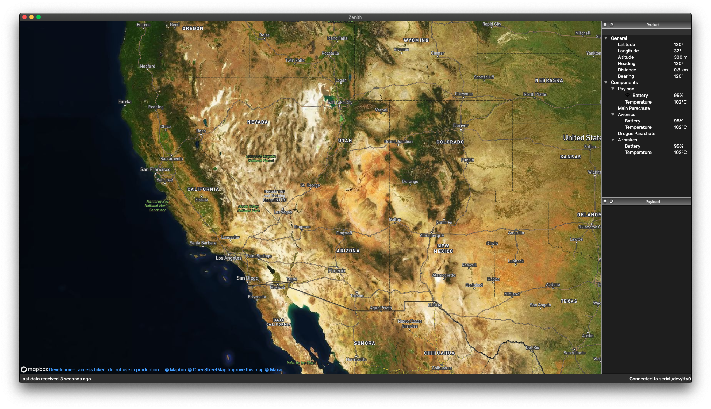

Zenith 2020 was created with the goal of making wirelessly-transmitted data from a rocket easy for anyone to read and understand without sacrificing power.
Every year, the Clark Aerospace team participates in the Spaceport America Cup, launching a custom-built rocket and accompanying payload to 10,000 feet (3,048 meters) in the middle of the New Mexico desert.
Monitoring important rocket statistics, such as temperature and altitude, is very important for ensuring that the mission goes smoothly. Unfortunately, many computer programs designed to do this do not have very intuitive interfaces.
Due to the COVID-19 pandemic, the 2020 Spaceport America Cup was cancelled, and development on Zenith 2020 was subsequently halted.
The prototype of Zenith 2020's main user interface. At the point when development stopped due to COVID-19, the rocket payload had not yet been designed, and as such the software was not yet retrieving data.